Key concepts
Parent-child relationships
Objects represented in openBIS can be connected using parent-child relationships. For research-data traceability, these relationships can link Experimental Steps in the Lab Notebook with the resources used during an activity and with the outputs generated by that activity. Datasets remain attached to the Experimental Step that describes how they were generated.
Parent-child hierarchy graph generated in openBIS
Once parent-child connections have been assigned between Objects, openBIS can visualise them as a Hierarchy Graph. The graph is the openBIS representation of the directed connections that were first shown conceptually as unidirectional arrows in the “Material Synthesis” data model. Each node in the graph is an openBIS Object, and each connection corresponds to an Object-to-Object parent-child relationship.
For example, the Synthesis Instrument and the Chemicals Chemical 1 and Chemical 2 appear upstream of the Material Synthesis Experimental Step, while the generated Synthesized Material Sample appears downstream. If that Sample is later used in another Experimental Step, the graph can continue through that downstream activity and show a larger part of the research workflow.
Traceability through connected objects
The value of these connections becomes clear when researchers need to reconstruct what happened to a Sample or understand how a dataset was generated. The following use cases show how the same relationship network supports traceability in practice.Use case 1: What was done with a Sample, and who generated it?
Imagine that several division members have registered Samples with the same descriptive name, Synthesized Material. A researcher first identifies the correct Sample in the Samples Collection by using metadata such as the Co-responsible person. This property helps distinguish who registered and shares responsibility for that Sample.
After opening the correct Sample Object, the researcher can follow its parent-child connections. The upstream connection points back to the Material Synthesis Experimental Step that generated it. From that Experimental Step, the researcher can continue upstream to see which resources were involved—for example the Synthesis Instrument and the Chemicals Chemical 1 and Chemical 2. If the Sample was later used in another Experimental Step, its downstream connection shows what was subsequently done with it.
In this way, the Sample Object becomes an entry point for answering practical questions such as: Who was responsible for this Sample? Which experiment generated it? Which resources were used? Was the Sample used again later, and in which activity?
Use case 2: How was this dataset generated, and can the process be reproduced?
Now imagine that a researcher finds a dataset in the Lab Notebook and wants to understand how it was produced. The dataset itself is not part of the parent-child hierarchy. Instead, it is attached to the Experimental Step that describes the activity through which the data were generated. The researcher therefore starts with that Experimental Step and follows its connected Objects.
For the Material Synthesis dataset, the researcher can identify the Instrument and Chemicals connected as parents and the generated Sample connected as a child. The Experimental Step metadata, its attached dataset, and the connected Inventory Objects together provide the context needed to understand how the data were produced.
This connected context can support reproducibility by helping another researcher identify the same kinds of inputs, resources, and outputs; it can support standardization by making it easier to compare whether repeated experiments follow the same documented workflow; and it can support other downstream processes such as review, quality assurance, reuse, or preparation of research outputs.
From research workflow to openBIS object relationships
In the “Material Synthesis” example, the logical connections drawn in the research workflow are the relationships that will later be implemented in openBIS. The direction of each arrow helps decide which Object is the parent and which is the child. For example, an Instrument or input Sample can point toward the Experimental Step in which it is used, while an Experimental Step can point toward the Sample it generates.
After these relationships have been registered, openBIS can visualise the resulting Object genealogy as a Hierarchy Graph. This provides a direct implementation view of the same research logic shown in the research workflow below: the conceptual arrows become stored parent-child connections, and the graph lets users inspect how Experimental Steps, Samples, Instruments, Chemicals, and other Objects are connected.

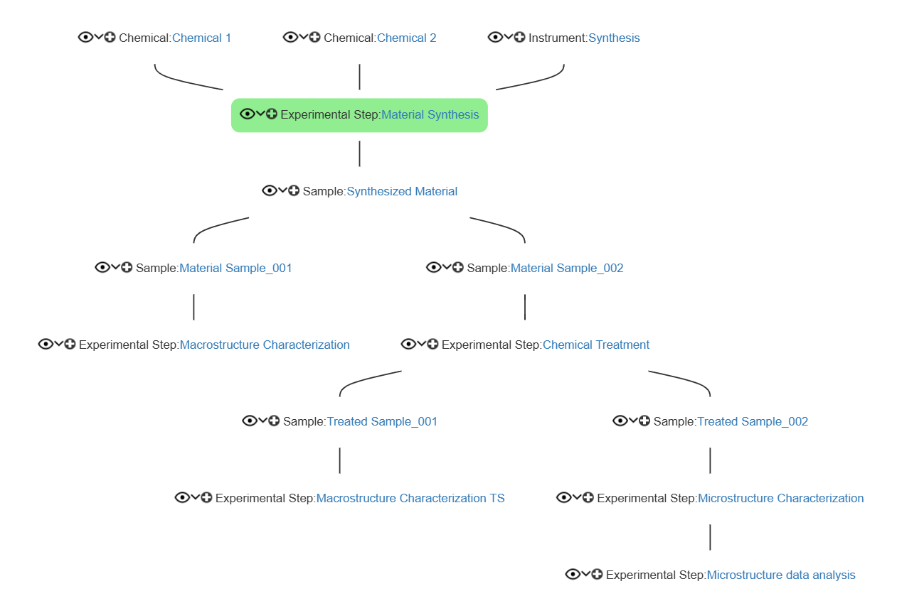
Connections for “Material Synthesis”
The tutorial example combines Experimental Steps from the Lab Notebook with Instrument,
Chemical, and Sample objects in the Inventory. The relevant Inventory structure includes
Instruments in the BAM Inventory and Chemicals and Samples in the FB Inventory. In this tutorial,
X.1 represents your division number.
Once the relevant Objects have been registered, it is helpful to connect them in an order that follows how the research workflow is done. For the “Material Synthesis” example, and for many other research workflows, the following sequence provides a practical approach:
- Register Experimental Steps and attach datasets in your Lab Notebook Space or in a Space dedicated to the specific research project. This establishes the activities that generated the research data.
- Register Inventory items in the Inventory structure agreed within your group, for example Instruments, Chemicals, and Samples that need to be traced across research activities.
- Connect outputs such as Samples to upstream and downstream Experimental Steps. This links the activity that generated a Sample with the later activities in which that Sample is used.
- Connect Experimental Steps to other Experimental Steps where one activity directly depends on or follows another activity in the workflow.
- Connect Inventory items to the Experimental Steps in which they were used, so that relevant Instruments, Chemicals, and other resources can be traced together with the data-generating activity.
This order is not a technical requirement of openBIS. It is a practical modeling strategy that helps users build the relationship network from the research workflow outward: first activities and datasets, then shared resources and outputs, and finally the parent-child connections that make the workflow traceable.

| Role in workflow | Object type | Tutorial examples | Typical relationship direction |
|---|---|---|---|
| Resources | Instrument | Synthesis; Macrostructure; Microstructure | Instrument → Experimental Step |
| Resources / inputs | Chemical | Chemical 1; Chemical 2; Treatment Solution | Chemical → Experimental Step |
| Activities | Experimental Step | Material Synthesis; Chemical Treatment; Macrostructure Characterization; Microstructure Characterization; data-analysis steps | Input object → Experimental Step → output object |
| Research outputs / later inputs | Sample | Synthesized Material and the additional Samples registered in the Inventory tutorial | Experimental Step → Sample; Sample → downstream Experimental Step when reused |
Tutorial workflow
- Connect one Experimental Step manually to learn how parent-child relationships are represented.
- Batch-update the Sample objects from the same Collection to add their workflow relationships.
- Batch-update objects from different Collections to add the workflow relationships of all other objects.
- Visualize the Hierarchy Graph (or Hierarchy Table) of an Experimental Step to review the traceability of the workflow datasets and other outputs such as samples.
Step 1: Connect one Experimental Step
Start with one Experimental Step so that you can review the direction of each relationship before updating multiple objects. Use the Material Synthesis Experimental Step from the Synthesis Collection.
Identify the Objects to connect
In this step you will connect the Material Synthesis Experimental Step with three parents and one child. The parent and child Objects must reflect the research workflow represented for Material Synthesis, the Instrument and Chemicals used by the activity are parents, while the Sample generated by the activity is a child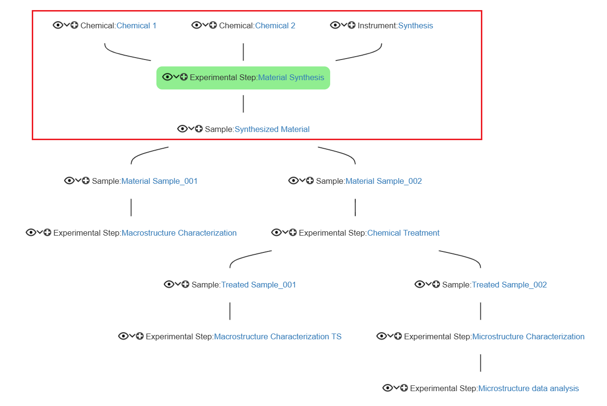
Before editing the Experimental Step, determine the Name or Code of every Object that you want to connect. This tutorial illustrates two ways to do this.
Option 1: You know the Object name
When you already know the Object name, you can use openBIS auto-completion while assigning the relationship. In this example, add the Instrument Synthesis and the Chemicals Chemical 1 and Chemical 2 as parents.
Option 2: Find the Code of the Sample to connect
The child of the experimental step Material Synthesis is the Sample Synthesized Material that you registered in the previous tutorial “Register inventory items”. Because all division members registered Samples with the same names, the Name alone is not sufficient to identify your Sample. Filter the Samples Collection using the Co-responsible person property and then note the Code of your Sample.
- Select the upper Inventory tab.
- Navigate to FB Inventory → X.1 Materials → SAMPLES_SYNTHESIS → Samples.
- Select the Samples Collection.
- Click FILTERS and select Filter Per Column.
- In the property field for Co-responsible person, enter your username.
- Review the filtered results and locate Synthesized Material.
- Note or copy the Code of your Sample. You will use it when adding the Sample as a child of the Experimental Step.

Relationships to add to the Experimental step “Material Synthesis”
| Relationship | Object type | Object Name | Role in the workflow |
|---|---|---|---|
| Parent | Instrument | Synthesis | Instrument used during the Experimental Step |
| Parent | Chemical | Chemical 1 | Chemical used during the Experimental Step |
| Parent | Chemical | Chemical 2 | Chemical used during the Experimental Step |
| Child | Sample | Synthesized Material | Sample generated by the Experimental Step |
Add all parents and children to the Experimental Step
Parent-child relationships can be assigned to an Experimental Step or any other Object from the Object's Edit tab. Add all relationships listed above in one editing session and save once after you have reviewed the complete set.
- Select the upper LAB NOTEBOOK tab.
- Navigate to your User Space → Material Synthesis Project → Synthesis Collection.
- Open the Experimental Step Material Synthesis.
- Click the Edit tab.
- In the Parents section, click Search Any.
- Select Instrument as the Object Type, start typing Synthesis in the Code/Name field, wait for auto-completion, and select the correct Instrument.
- Still in the Parents section, click Search Any again, select Chemical as the Object Type, and add Chemical 1.
- Repeat the previous action to add Chemical 2 as a parent.
- In the Children section, click Search Any.
- Select Sample as the Object Type.
- In the Code/Name field, enter the Code of the Synthesized Material Sample that has your username as the Co-responsible person value.
- Review that the Experimental Step has three parents—instrument Synthesis, Chemical 1, and Chemical 2—and one child—your Synthesized Material Sample, with your name as Co-responsible person.
- Click Save.
- Reopen the Experimental Step and confirm that the intended parents and child are displayed.


Save.Step 2: Batch-update Samples from the same Collection
The Sample objects registered in the previous Inventory tutorial are located in the same Samples Collection. Instead of editing each Sample separately, export the metadata of the samples to update, edit the exported Excel file to add parent-child relationships and use it for XLS Batch Update Objects.
Identify the Objects to connect
In this step you will connect the Synthesized Sample with its two children Material Sample 001 and Material Sample 002.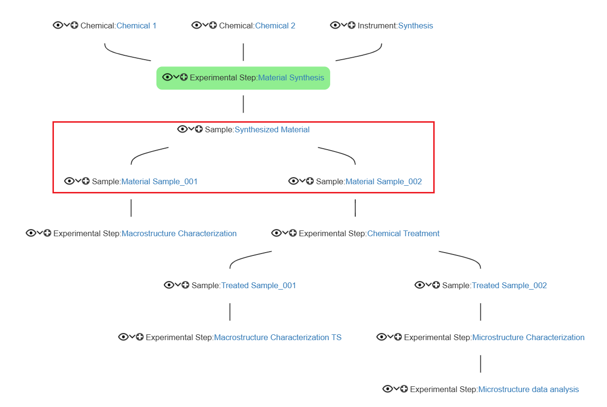
The XLS Batch Update Objects function can only be used to update objects that are located in the same Collection. If you need to update objects from different Collections, use the Object Browser explained in Step 3 to prepare a batch update file.
Relationships to add to the sample "Synthesized Material"
| Relationship | Object type | Object Name | Role in the workflow |
|---|---|---|---|
| Child | Sample | Material Sample 001 | A sample or fraction of the Synthesized Material |
| Child | Sample | Material Sample 002 | A sample or fraction of the Synthesized Material |
- Select the upper Inventory tab.
- Navigate to FB Inventory → X.1 Materials → SAMPLES_SYNTHESIS → Samples.
- Select the Sample objects that you want to connect.
- Export the selected object metadata to an Excel file.
- Save an unchanged backup copy of the exported file before editing it.
- Open the exported Excel file.
- Identify the columns representing parent and child relationships.
- Add the object identifiers required to connect samples from the same collection.
- Edit only the relationship values that need to change. In this step, the relationships of Synthesized Material, Treated Sample_001 and Treated Sample_002 are updated.
- Do not modify object identifiers, codes, column headings, or the worksheet structure.
- Save the updated Excel file under a clear filename, for example
samples_material_synthesis_connections.xlsx. - Return to the Samples Collection and select More → XLS Batch Update Objects.
- Upload the updated file, verify the filename, and click Accept.
- Open one of the updated Sample objects and verify their parent-child relationships.


Download example updated samples.xlsx


Visualize the connections you have created between the samples.


Step 3: Batch-update objects from different Collections
Identify the Objects to connect
In this step you will connect several samples with Experimental steps, instruments and Chemicals. The parent and child relationships must reflect the research workflow represented for Material Synthesis, the Instrument and Chemicals used by the activity are parents, while the Sample generated by the activity is a child when output or a parent when input to another Experimental Step.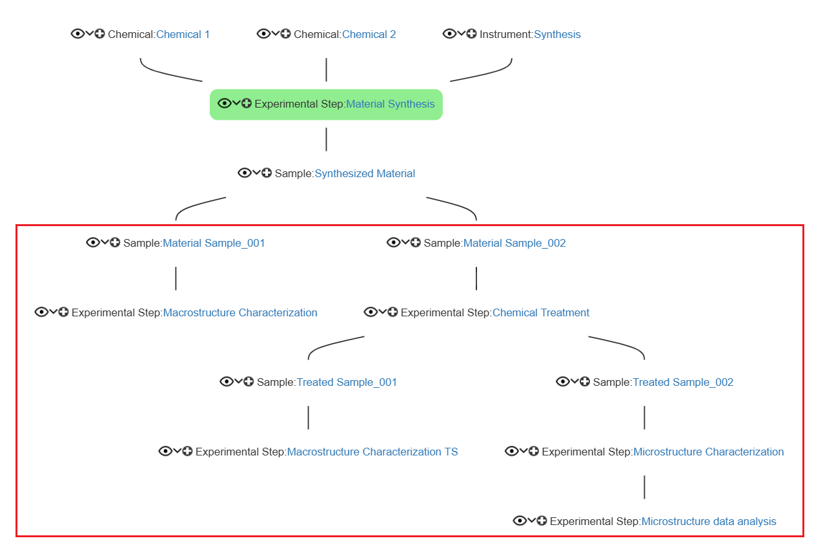
Relationships to add to the experimental step "Macrostructure characterization"
| Relationship | Object type | Object Name | Role in the workflow |
|---|---|---|---|
| Parent | Sample | Material Sample 001 | Sample used for the Experimental Step |
| Parent | Instrument | Macrostructure | Instrument used during the Experimental Step |
Relationships to add to the experimental step "Chemical Treatment"
| Relationship | Object type | Object Name | Role in the workflow |
|---|---|---|---|
| Parent | Sample | Material Sample 002 | Sample used for the Experimental Step |
| Parent | Chemical | Treatment Solution | Chemical used during the Experimental Step |
| Child | Sample | Treatment Sample 001 | Sample generated during the Experimental Step |
| Child | Sample | Treatment Sample 002 | Sample generated during the Experimental Step |
Relationships to add to the experimental step "Macrostructure characterization TS"
| Relationship | Object type | Object Name | Role in the workflow |
|---|---|---|---|
| Parent | Sample | Treated Sample 001 | Sample used for the Experimental Step |
| Parent | Instrument | Macrostructure | Instrument used during the Experimental Step |
Relationships to add to the experimental step "Microstructure characterization"
| Relationship | Object type | Object Name | Role in the workflow |
|---|---|---|---|
| Parent | Sample | Treated Sample 002 | Sample used for the Experimental Step |
| Parent | Instrument | Microstructure | Instrument used during the Experimental Step |
| Child | Experimental Step | Microstructure Data Analysis | Follow-up Experimental Step |
The complete “Material Synthesis” example is designed to connect several Collections and Object types. openBIS 20.10.12+ supports updating existing Objects of different types in different Collections from Tools → Utilities → Object Browser → XLS Batch Update Objects. In this tutorial, use this function to complete parent-child relationships in one Excel-based update.
After you select the Object types, openBIS generates an Excel template. For every Object to be updated, the file must contain the unique Identifier. The Identifier is essential because it tells openBIS exactly which existing Object has to be updated.
Localize identifiers of objects to connect and export reference Excel files
The easiest and safest approach is to first collect the identifiers from the Collections where the Objects are already registered. Do not try to reconstruct identifiers from Object names.
- Open the Collection that contains the Objects you want to update, for example Instruments, Chemicals, Samples, or a Lab Notebook Collection containing Experimental Steps.
- In the Collection table, use Columns to display at least Identifier and Name. For Samples, also display Co-responsible person so that you can distinguish the Samples you registered from Samples with the same names registered by other group members.
- If necessary, filter the table so that only the Objects needed for the Material Synthesis workflow remain.
- Export the table with Import Compatible = Yes and export the selected columns and rows. Keep these exports as reference files; do not upload them as the cross-Collection update file.
- Repeat this for each relevant Collection. You now have the exact identifiers of the existing Objects that you want to update to add relationships.
Collections of objects to connect
| Object type | Collection path | Objects |
|---|---|---|
| Sample | FB Inventory → X.1 Materials → SAMPLES_SYNTHESIS → Samples | Material Sample 001 Material Sample 002 Treated Sample 001 Treated Sample 002 |
| Experimental Step | Lab Notebook → Home Space → Material Synthesis → Treatment non-destructive Lab Notebook → Home Space → Material Synthesis → Parameter 1 Lab Notebook → Home Space → Material Synthesis → Parameter 1 Lab Notebook → Home Space → Material Synthesis → Parameter 2 Lab Notebook → Home Space → Material Synthesis → Parameter 2 Analysis |
Chemical Treatment Macrostructure Characterization Macrostructure Characterization TS Microstructure Characterization Microstructure Data Analysis |
| Instrument | BAM Inventory → BAM Equipment → X.1 Equipment Open → Instruments | Macrostructure Microcstructure |
| Chemical | FB Inventory → X.1 Materials → CHEMICALS_SYNTHESIS → Chemicals | Treatment Solution |
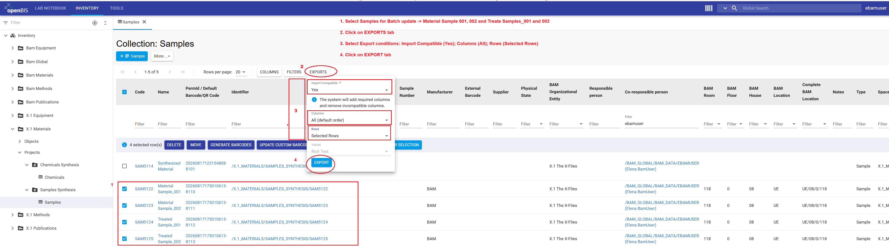
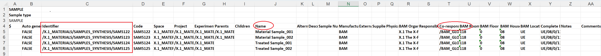
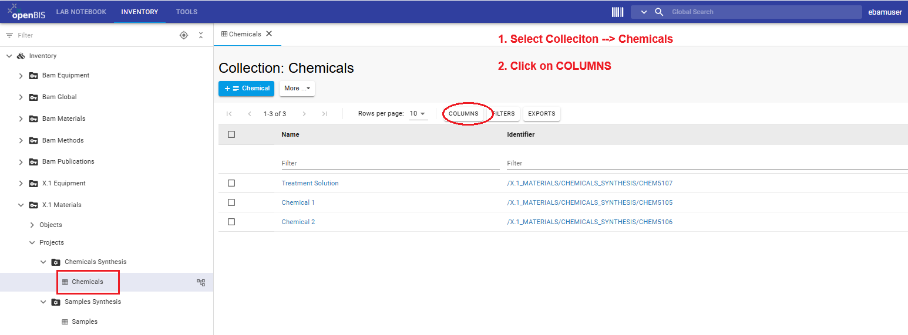
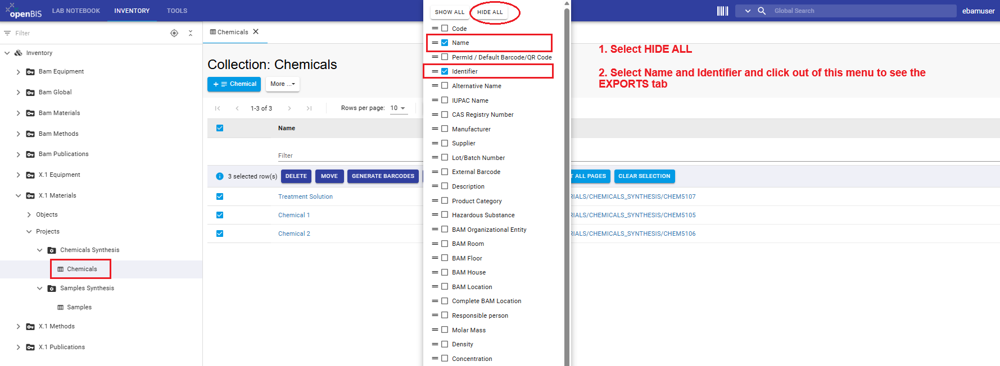
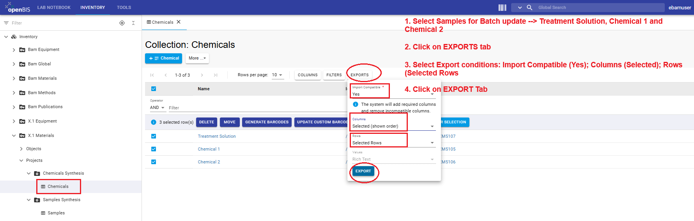
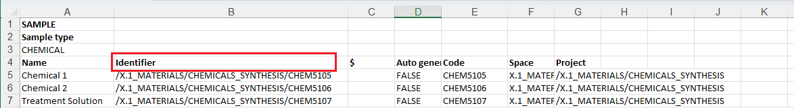
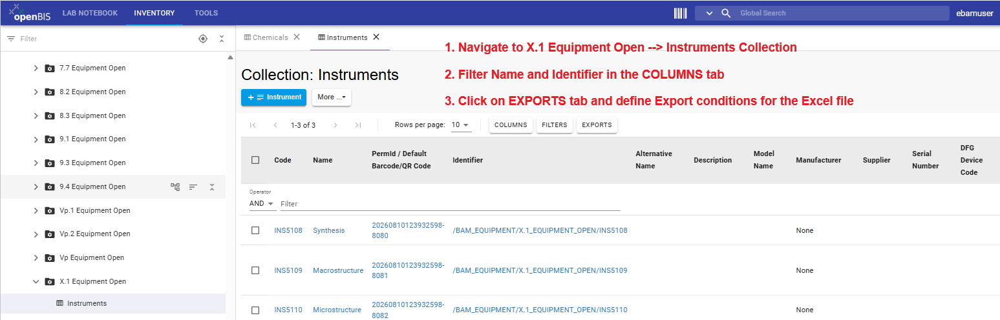
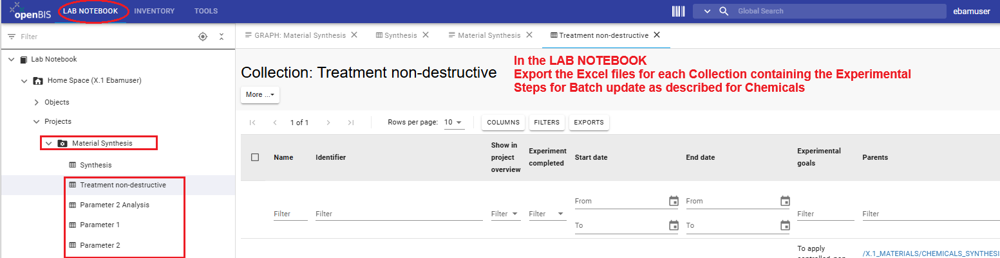
Update template for batch update Objects across collections with objects identifiers to define parent and child relationships
- Open Tools → Utilities → Object Browser.
- Open the drop-down menu More and select XLS Batch Update Objects.
- Select the Object types required for this update: Chemical, Instrument, Experimental Step, and Sample.
- Download the Excel template generated by openBIS for these Object types.
- Open the reference exports that you previously downloaded for Samples, Experimental Steps, Chemicals, and Instruments.
- Open the Material Synthesis Data Model to visualize the relationships.
- Start updating the relationships for Samples following the worfklow order, copy-paste the identifiers of Parents and Children in the corresponding columns. When several related Objects must be entered in one relationship cell, paste identifiers below each other.
- Update then the relationships for Experimental Steps following the workflow order, copy-paste the identifiers of Parents and Children in the corresponding columns.
- Review the identifiers and save the Excel file under a clear name, for example
material_synthesis_relationships_batch_update.xlsxfor batch update. - Return to Object Browser → XLS Batch Update Objects, upload the completed file, verify the filename, and click Accept.
- Follow this tutorial step 4 to Visualize and verify relationship hierarchy.
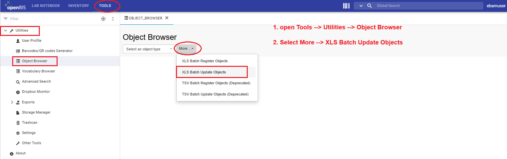
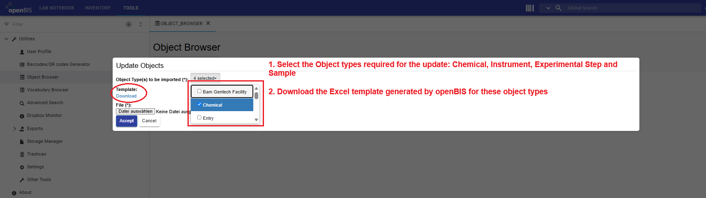
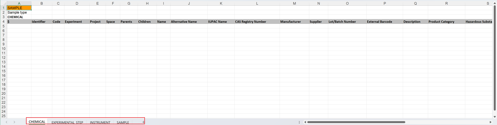
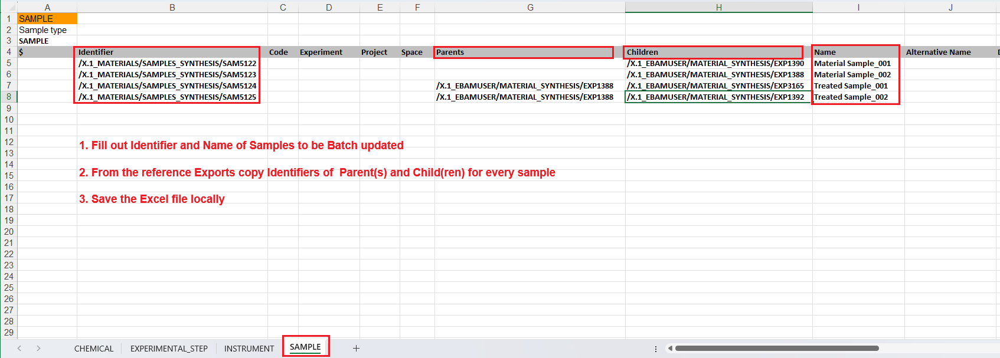
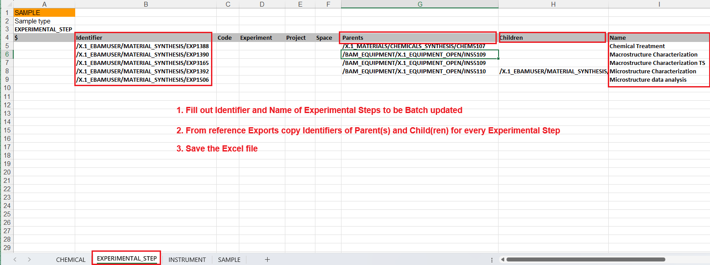
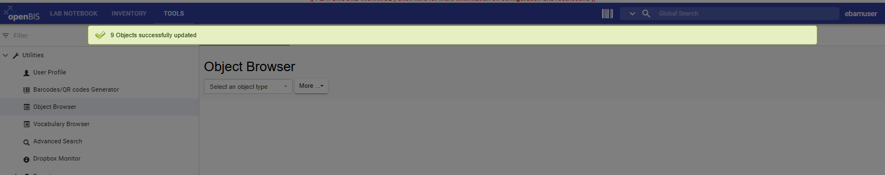
Step 4: Visualise and verify the relationship hierarchy
After the relationships have been added, use openBIS to visualise the parent-child genealogy of an Object. The Hierarchy Graph displays Object-to-Object parent-child relationships; it does not display datasets.
Traceability through connected objects
The value of these connections becomes clear when researchers need to reconstruct what happened to a Sample or understand how a dataset was generated. The following use cases show how visualisation of parent-child relationships supports traceability in practice.Parent Objects
Which resources or inputs led into this activity?
↓
Experimental Step
Which activity is documented here?
↓
Child Objects
Which Samples or downstream activities resulted from it?
- Navigate to the object and click on it to open the object form
- In the Object form, open the More drop-down menu.
- Select Hierarchy Graph.
- Review the parents and children shown around the object.
- If the graph is large, reduce with the slide bars for parents and children or reduce the number of Object types shown.
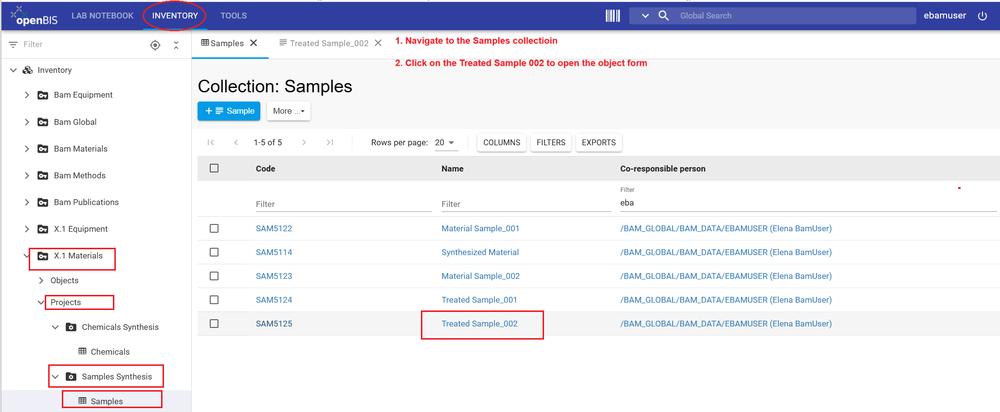
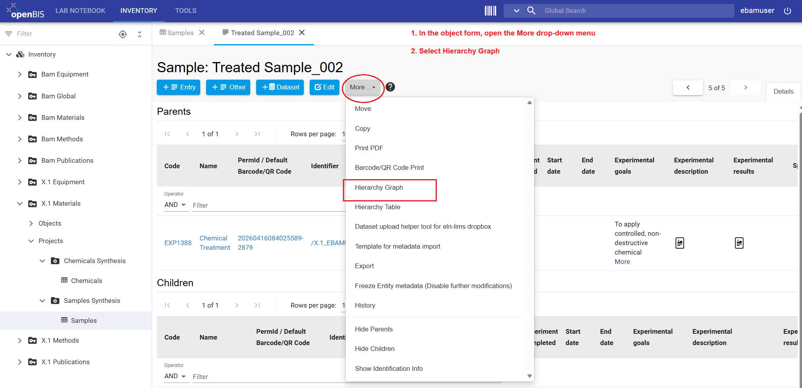
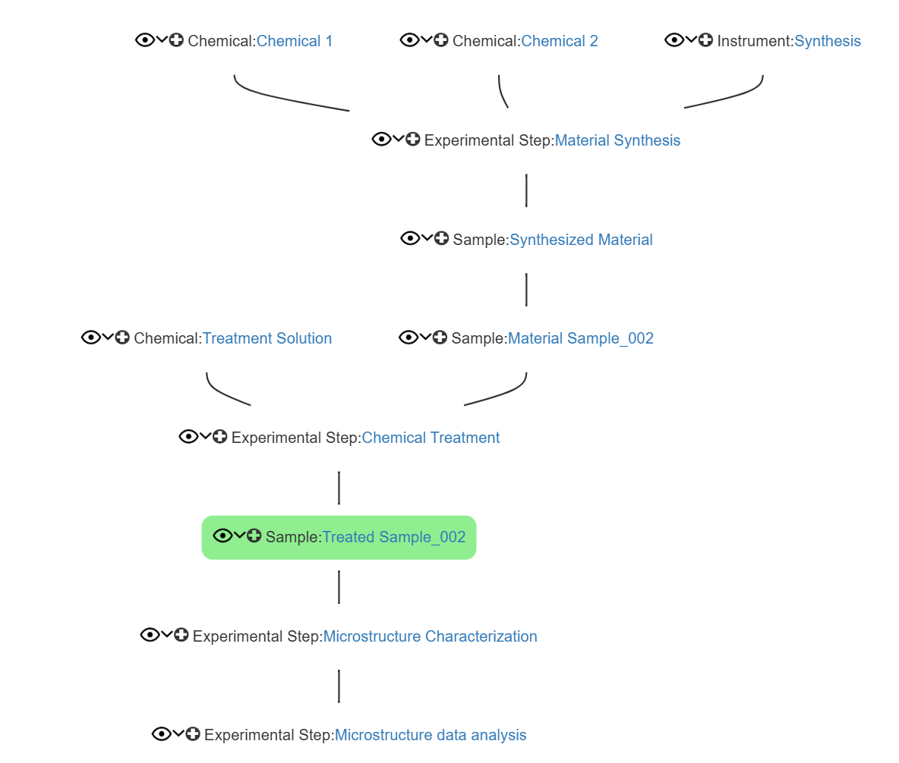
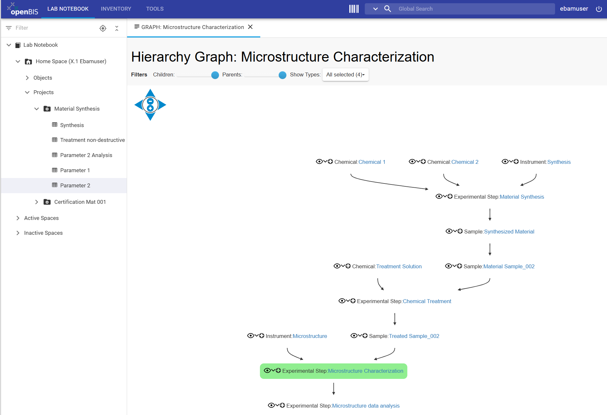
Alternative view: Hierarchy Table
If a graphical tree is difficult to review, return to the Object form and select More → Hierarchy Table. This presents the genealogy of the selected Object in a tabular format and provides an alternative way to inspect the same parent-child structure.
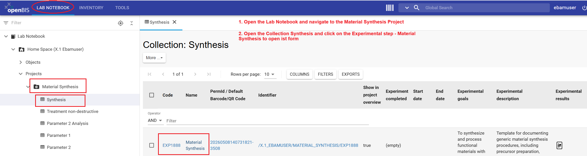
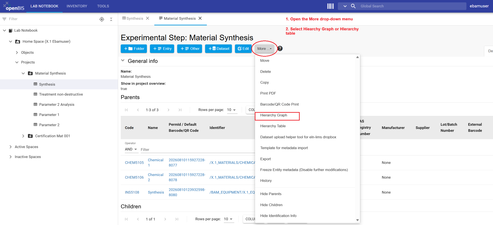
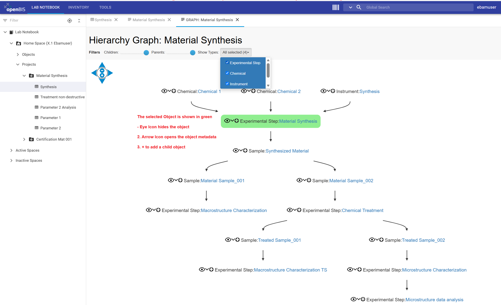
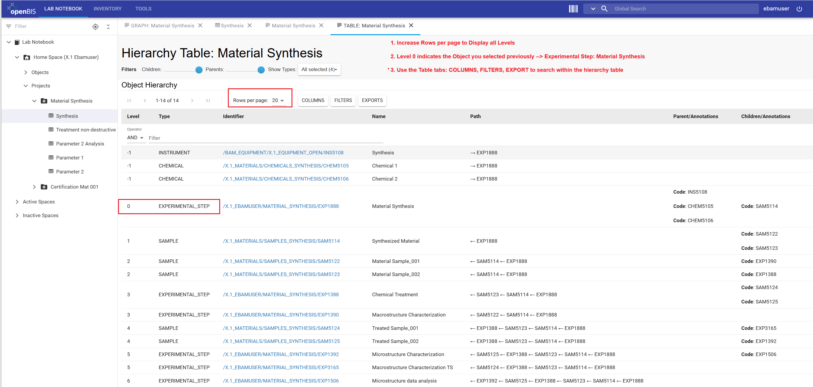
Result
After completing this tutorial, you should be able to connect research data by linking Experimental Steps registered in the Lab Notebook with Inventory items such as Instruments and Chemicals and with research outputs/inputs such as Samples. You should also be able to update relationships efficiently for objects in one Collection or across different Collections. You should also be able to open the Hierarchy Graph or Hierarchy Table for an Experimental Step, inspect and prune its Object genealogy, and use that hierarchy together with the dataset attached to the Experimental Step to reconstruct which resources were used, which Samples were produced, and how outputs were used in later activities.